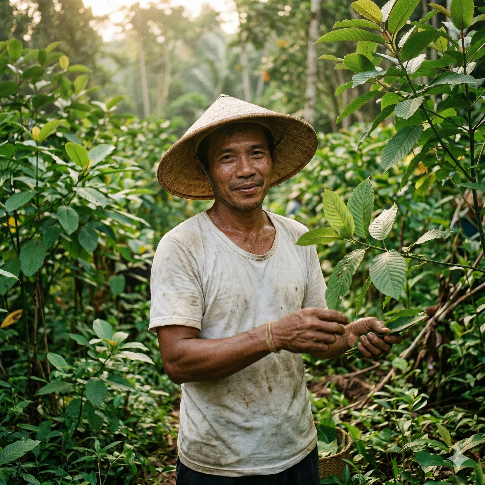
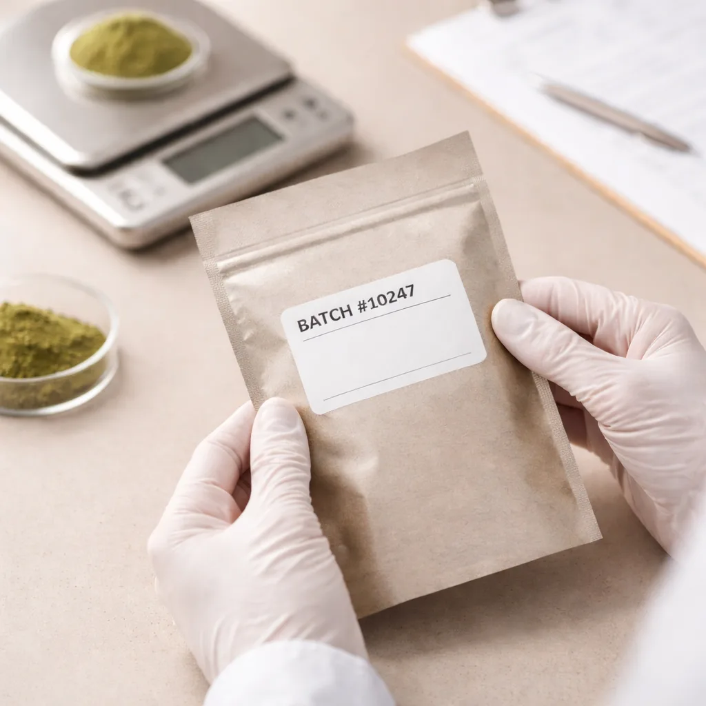
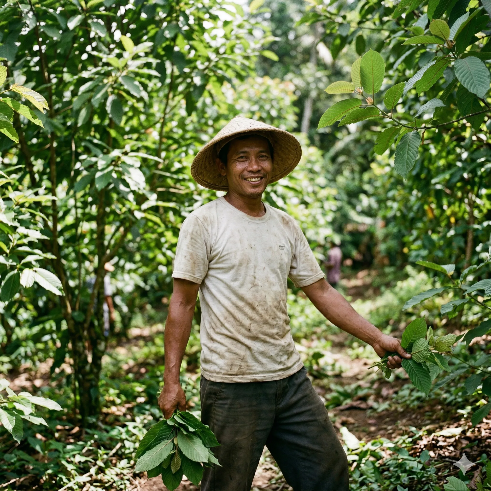

Buy Kratom in Montreal from Verified Botanicals
Verified Botanicals makes it easy to buy kratom in Montreal and across Quebec, with lab-tested powder, ethical sourcing, and consistent quality from origin to your door.
From harvest to final seal, every step reflects a commitment to consistency. Our kratom powder is sourced from trusted suppliers, handled carefully, and packaged with the same standard every time, because you deserve a source you can rely on.

We test every batch and keep the records to prove it. For kratom in Montreal and across Quebec, Verified Botanicals holds itself to a documented standard, so you never have to wonder what's in the bag.

Our sourcing starts with the people who grow it. We work with suppliers who practice responsible harvesting, because quality at the source means quality in the bag. It shows in the product, and we think you'll notice.

Verified Botanicals emphasizes transparent sourcing and quality standards for customers looking to buy kratom online in Canada from a trusted online source.
Premium botanical material, selected at the source for purity and consistency.
Every batch is tested and documented before it ships. No guesswork, no exceptions.
We work close to the source to maintain better control over product quality and to ensure you get the best price!
Our sourcing emphasizes responsible harvesting practices.
Waterproof mylar bags are designed to seal in flavor while providing durable, reliable product protection.
We're almost ready. Early customers in Montreal, Quebec, and across Canada will be first in line for launch rebates and exclusive offers. Sign up below to secure your spot.